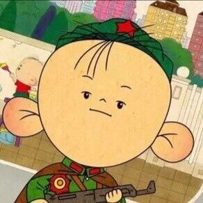

<!DOCTYPE html>
<html lang="en">
<head>
  <meta charset="UTF-8">
  <meta name="viewport" content="width=device-width, initial-scale=1.0">
  <meta http-equiv="X-UA-Compatible" content="ie=edge">
  <title></title>
</head>
<body>
  
  <canvas id="drawing" width="200" height="200"></canvas>
  <script>
    /**
      ## 2D上下文
      使用2D绘图上下文提供的方法，可以绘制简单的2D图形，比如矩形、弧线和路径。2D上下文的
      坐标开始于`<canvas>`元素的左上角，原点坐标是 (0,0)。所有坐标值都基于这个原点计算，
      x值越大表示越靠右，y值越大表示越靠下。默认情况下，width和height表示水平和垂直两个
      方向上可用的像素数目。

      ### 填充和描边
      2D上下文的两种基本绘图操作是填充和描边、填充，就是用指定的样式（颜色、渐变或图像）填
      充图形，描边，就是只在图形的边缘画线，大多数2D上下文操作都会细分为填充和描边两个操作，
      而操作的结果取决于两个属性： **fillStyle** 和 **strokeStyle** 。

      这两个属性的值可以是字符串、渐变对象或模式对象，它们的默认值都是"#000000"。可以为它们
      指定表示颜色的字符串值，也可以使用CSS中指定颜色值的任何格式。举个例子：
      ```js
      var drawing = document.getElementById("drawing");

      if (drawing.getContext) {
        var context = drawing.getContext("2d");

        context.strokeStyle = "red";
        context.fillStyle = "#0000ff";
      }
      ```

      ### 绘制矩形
      矩形是唯一一种可以直接在2D上下文中绘制的形状。与矩形有关的方法包括 **fillRect()** 、**strokeRect()**
      和 **clearRect()** 。这三个方法都能接收4个参数：矩形的x坐标、矩形的y坐标、矩形宽度和矩形高度。这些
      参数的单位都是像素。

      首先，**fillRect()** 方法在画布上绘制的矩形会填充指定的颜色。填充的颜色通过fillStyle属性指定，比如：
      ```js
      var drawing = document.getElementById("drawing");

      if (drawing.getContext) {
        var context = drawing.getContext("2d");

        // 绘制红色矩形
        context.fillStyle = "#ff0000";
        context.fillRect(10, 10, 50, 50);

        // 绘制半透明的蓝色矩形
        context.fillStyle = "rgba(0,0,255,0.5)";
        context.fillRect(30, 30, 50, 50)
      }
      ```
      以上代码首先将fillStyle设置为红色，然后从（10,10）处开始绘制矩形，矩形的宽高均为50像素。然后，
      通过rgba格式再将fillStyle设置为半透明的蓝色，在第一个矩形上面绘制第二个矩形。结果就是可以透过
      蓝色的矩形看到红色的矩形。

      **strokeRect()** 方法在画布上绘制的矩形会使用指定的颜色描边。描边颜色通过strokeStyle属性指定。
      来看下面的例子：
      ```js
      var drawing = document.getElementById("drawing");

      if (drawing.getContext) {
        var context = drawing.getContext("2d");

        // 绘制红色描边矩形
        context.strokeStyle = "#ff0000";
        context.strokeRect(10, 10, 50, 50);

        // 绘制半透明的蓝色描边矩形
        context.strokeStyle = "rgba(0, 0, 225, 0.5)";
        context.strokeRect(30, 30, 50, 50);
      }
      ```
      以上代码绘制了两个重叠的矩形。不过，这两个矩形都是只有框线。

      最后，clearRect()方法用于清除画布上的矩形。这个方法可以把绘制上下文中的某一个矩形区域变透明。
      通过绘制形状然后再清除指定区域。例如把某个形状切掉一块。下面看一个例子：
      ```js
      var drawing = document.getElementById("drawing");

      if (drawing.getContext) {
        var context = drawing.getContext("2d");

        // 绘制红色矩形
        context.fillStyle = "#ff0000";
        context.fillRect(10, 10, 50, 50);

        // 绘制半透明的蓝色矩形
        context.fillStyle = "rgba(0, 0, 225, 0.5)";
        context.fillRect(30, 30, 50, 50);

        // 在两个矩形重叠的地方清除一个小矩形
        context.clearRect(40, 40, 10, 10);
      }
      ```

      ### 绘制路径
      2D绘制上下文支持很多在画布上绘制路径的方法。通过路径可以创造出复杂的形状和线条。要绘制
      路径，首先必须调用beginPath()方法，表示开始绘制新路径。然后，再通过调用下列方法来实际
      地绘制路径。
      * arc（x，y，radius，startAngle，andAngle，counterlockwise）：以（x，y）为圆心绘制
        一条弧线，弧线半径为radius，起始和结束角度（用弧度表示）分别为startAngle和endAngle。
        最后一个参数表示startAngle和endAngle是否按逆时针方向计算，值为false表示按顺时针方向计算。
      * arcTo（x1，y1，x2，y2，radius）：从上一点开始绘制一条弧线，到（x2，y2）为止，并且
        以给定的半径radius穿过（x1，y1）。
      * bezierCurveTo（c1x，c1y，c2x，c2y，x，y）：从上一点开始绘制一条曲线，到（x，y）为止，
        并且以（c1x，c1y）和（c2x，c2y）为控制点。
      * lineTo（x，y）：从上一点开始绘制一条直线，到（x，y）为止。
      * moveTo（x，y）：将绘图游标移到（x，y），不画线。
      * quadraticCurveTo（cx，cy，x，y）：从上一点开始绘制一条二次曲线，到（x，y）为止，并
        且以（cx，cy）作为控制点。
      * rect（x，y，width，height）：从点（x，y）开始绘制一个矩形，宽度和高度分别有width和
        height指定。这个方法绘制的是矩形路径，而不是strokeRect()和fillRect()所绘制的独立的形状。

      如果想绘制一条连接到路径起点的线条，可以调用 **closePath()** 。
      如果路径已经完成，你想用fillStyle填充它，可以调用 **fill()** 方法。
      如果想对路径描边，可以调用 **stroke()**。描边使用的是strokeStyle。
      调用 **clip()** 可以在路径上创建一个剪切区域。
      下面来看个例子，绘制一个不带数字的使用表盘。
      ```js
      var drawing = document.getElementById("drawing");

      if (drawing.getContext) {
        var context = drawing.getContext("2d");

        // 开始路径
        context.beginPath();

        // 绘制外圆
        context.arc(100, 100, 99, 0, 2 * Math.PI, false);

        // 绘制内圆
        context.moveTo(194, 100);
        context.arc(100, 100, 94, 0, 2 * Math.PI, false);

        // 绘制分针
        context.moveTo(100, 100);
        context.lineTo(100, 15);

        // 绘制时针
        context.moveTo(100, 100);
        context.lineTo(35, 100);

        // 描边路径
        context.stroke();
      }
      ```
      这个例子使用arc()方法绘制了两个圆形：一个外圆和一个内圆，构成了表盘的边框。外圆的半径
      是99像素，圆心位于点 **(100, 100)**，也是画布的中心点。为了绘制一个完整的圆形，从0弧
      度开始，绘制2π弧度（通过Math.PI来计算）。在绘制内圆之前，必须把路径移动到内圆的某一点，
      避免绘制出多余的线条。第二次调用arc使用了小一点的半径，以便创建边框的效果。然后，组合
      使用moveTo()和lineTo()方法来绘制时针和分针。最后一步是调用stroke()方法，这样才能把图
      形绘制到画布上，如下图。

      **isPointInPath()** 的方法：用于在路径被关闭之前确定画布上的某一点是否位于路径上，这
      个方法接收x和y坐标作为参数。

      ### 绘制文本
      绘制文本主要有两个方法：fillText()和strokeText()。这两个方法都接收4个参数：要绘制的文
      本字符串、x坐标、y坐标和可选的最大像素宽度。而且，这两个方法都以下列3个属性为基础。
      * font：表示文本样式、大小及字体，用CSS中指定字体的格式来指定，例如"10px Arial"。
      * textAlign：表示文本对齐方式。可能的值有"start"、"end"、"left"、"right"和"center"。
        建议使用"start"和"end"，不要使用"left"和"right"，因为钱两者的意思更稳妥，能同时适合
        从左到右和从右到左显示（阅读）的语言。
      * textBaseline：表示文本的基线。可能的值有"top"、"hanging"、"middle"、"alphabetic"、
        "ideographic"和"bottom"。

      这几个属性都有默认值，因此没有必要每次使用它们都重新设置一遍值。**fillText()** 方法使用fillStyle
      属性绘制文本，strokeText()方法使用strokeStyle属性为文本描边。相对来说，还是使用fillText()
      的时候更多，该方法模仿了在网页中正常显示文本。例如，下面的代码在前面创建的表盘上方绘制了个数字12；
      ```js
      context.font = "bold 14px Arial";
      context.textAlign = "center";
      context.textBaseline = "middle";
      context.fillText("12", 100, 20);
      ```
      ### 变换
      2D绘制上下文支持各种基本的绘制变换。创建绘制上下文时，会以默认值初始化变换矩阵，在默认的矩阵下，
      所有处理都按描述直接绘制。为绘制上下文应用变换，会导致使用不同的变阵矩阵应用处理，从而产生不同的结果。

      可以通过如下方法来修改变换矩阵。
      * rotate（angle）：围绕原点旋转图像angle弧度。
      * scale（scaleX，scaleY）：缩放图像，在x方向乘以scaleX，在y方向乘以scaleY。scaleX和scaleY的
        默认值都是1.0。
      * translate（x，y）：将坐标原点移动到（x，y）。执行这个变换之后，坐标(0,0)会变成之前由 (x,y)表示的点。
      * transform（m1_1，m1_2，m2_1，m2_2，dx，dy）：直接修改变换矩阵。
      * setTransform（m1_1，m1_2，m2_1，m2_2，dx，dy）：将变换矩阵重置为默认状态，然后再调用transform()。

      像下面这样使用rotate()方法旋转时钟的表针。
      ```js
      var drawing = document.getElementById("drawing");

      if (drawing.getContext) {
        var context = drawing.getContext("2d");

        // 开始路径
        context.beginPath();

        // 绘制外圆
        context.arc(100, 100, 99, 0, 2 * Math.PI, false);

        // 绘制内圆
        context.moveTo(194, 100);
        context.arc(100, 100, 94, 0, 2 * Math.PI, false);

        // 变换原点
        context.translate(100, 100);

        // 旋转表针
        context.rotate(1);

        // 绘制分针
        context.moveTo(0, 0);
        context.lineTo(0, -85);

        // 绘制时针
        context.moveTo(0, 0);
        context.lineTo(-65, 0);

        // 描边路径
        context.stroke();
      }
      ```
      因为原点已经变换到了时钟表盘的中心点，所以旋转也是以该点为圆心的。结果就像是表针真地被
      固定在表盘中心一样，然后向右旋转了一样角度。结果如下图：

      虽然没有什么办法把上下文中的一切都重置回默认值，但有两个方法可以跟踪上下文的状态变化。
      如果知道将来还要返回某组属性与变换的组合，可以调用 **save()** 方法。调用这个方法后，
      当时的所有设置都会进入一个栈结构，得以妥善保管。然后可以对上下文进行其他修改。等想要
      回到之前保存的设置时，可以调用 **restore()**方法，在保存设置栈结构中向前返回一级，恢
      复之前的状态。连续调用 **save()** 可以把更多设置保存到栈结构中。之后再连续调用restore()
      则可以一级一级返回。看下面的例子：
      ```js
      var drawing = document.getElementById("drawing");

      if (drawing.getContext) {
        var context = drawing.getContext("2d");

        context.fillStyle = "#ff0000";
        context.save();

        context.fillStyle = "#00ff00";
        context.translate(100, 100);
        context.save();

        context.fillStyle = "#0000ff";
        context.fillRect(0, 0, 100, 200) // 从点（100, 100）开始绘制蓝色矩形

        context.restore();
        context.fillRect(10, 10, 100, 200) // 从点（110, 110）开始绘制绿色矩形
  
        context.restore();
        context.fillRect(0, 0, 100, 200) // 从点（0, 0）开始绘制红色矩形
      }
      ```
      首先，将fillStyle设置为红色，并调用save()保存上下文状态。接下来，把fillStyle修改为
      绿色，把坐标原点变换到 (100, 100)，再调用save()保存上下文状态。然后，把fillStyle修改
      为蓝色并绘制蓝色的矩形。因为此时的坐标原点已经变了，所以矩形的左上角坐标实际上是 (100, 100)。
      然后调用restore()，之后fillStyle变回了绿色，因而第二个矩形就是绿色。之所以第二个矩形的
      起点是 (100, 100)，是因为坐标位置的变换仍然起作用。再调用一次restore()，变换就被取消了，
      而fillStyle也返回了红色。所以最后一个矩形是红色的，而且绘制的起点是 (0, 0)。
      :::warning 警告
      save()方法保存的只是会绘图上下文的设置和变换，不会保存绘图上下文的内容。
      :::

      ### 绘制图像
      如果你想把一幅图像绘制到画布上，可以使用drawImage()方法。调用这个方法时，可以使用三种不
      同的参数组合。最简单的调用方式是传入一个HTML``元素，以及绘制该图像的起点的x和y坐标。
      例如：
      ```html
      
      ```
      ```js
      window.onload = function() {
        var image = document.images[0];
        var drawing = document.getElementById("drawing");
        var context = drawing.getContext("2d");
        context.drawImage(image, 10, 10);
      }
      ```
      **drawImage()** 方法的这种调用方式总共需要传入9个参数：要绘制的图像、源图像的x图标、源图
      像的y坐标、源图像的宽度、源图像的高度、目标图像的x坐标、目标图像的y坐标、图标图像的宽度、
      目标图像的高度。这样调用drawImage()方法可以获得最多的控制。

      ### 阴影
      2D上下文会根据以下几个属性的值，自动为形状或路径绘制出阴影。
      * shadowColor：用Css颜色格式表示阴影颜色，默认为黑色。
      * shadowOffsetX：形状或路径x轴方向的阴影偏移量，默认为0。
      * shadowOffsetY：形状或路径y轴方向的阴影偏移量，默认为0。
      * shadowBlur：模糊的像素数，默认0，即不模糊。

      这些属性都可以通过context对象来修改。只要在绘制前为它们设置适当的值，就能自动产生阴影。例如：
      ```js
      var drawing = document.getElementById("drawing");
      var context = drawing.getContext("2d");

      if (drawing.getContext) {
        // 设置阴影
        context.shadowOffsetX = 5;
        context.shadowOffsetY = 4;
        context.shadowBlur = 4;
        context.shadowColor = "rgba(0, 0, 0, 0.5)";

        // 绘制红色矩形
        context.fillStyle = "#ff0000";
        context.fillRect(10, 10, 50, 50);

        // 绘制蓝色矩形
        context.fillStyle = "rgba(0, 0, 255, 1)";
        context.fillRect(30, 30, 50, 50);
      }
      ```

      ### 渐变
      渐变CanvasGradient实例表示，要创建一个新的线性渐变，可以调用 **createLinearGradient()** 方法。
      这个方法接收4个参数：起点的x坐标、起点的y坐标、终点的x坐标、终点的y坐标。调用这个方法后，它就会
      创建一个指定大小的渐变，并返回CanvasGradient对象的实例。

      创建了渐变对象后，下一步就是 **addColorStop()** 方法来指定色标。这个方法接收两个参数：色标位置
      和CSS颜色值。色标位置是一个0（开始的颜色）到1（结束的颜色）之间的数字。例如：
      ```js
      var drawing = document.getElementById("drawing");
      var context = drawing.getContext("2d");

      if (drawing.getContext) {
        var gradient = context.createLinearGradient(30, 30, 70, 70);

        gradient.addColorStop(0, "white");
        gradient.addColorStop(1, "black");

        // 绘制红色矩形
        context.fillStyle = "#ff0000";
        context.fillRect(10, 10, 50, 50);

        // 绘制渐变矩形
        context.fillStyle = gradient;
        context.fillRect(30, 30, 50, 50);
      }
      ```
      要创建径向渐变（或放射渐变），可以使用createRadiaGradient()方法。这个方法接收6个参数，对应着两个圆
      的圆心和半径。前三个参数指定的是起点圆的原心（x和y）及半径，后三个参数值定的是终点圆的原心（x和y）及
      半径。可以把径向渐变想象成一个长圆桶，而这6个参数定义的正是这个桶的两个圆形开口的位置。如果把一个圆形
      开口定义得比另一个小一些，那这个圆桶就变成了圆锥体，而通过移动每个圆形开口位置，就可达到像旋转这个圆
      锥体一样的效果。来看一个例子：
      ```js
      var drawing = document.getElementById("drawing");
      var context = drawing.getContext("2d");

      if (drawing.getContext) {
        var gradient = context.createRadialGradient(55, 55, 10, 55, 55, 30);

        gradient.addColorStop(0, "white");
        gradient.addColorStop(1, "black");

        // 绘制红色矩形
        context.fillStyle = "#ff0000";
        context.fillRect(10, 10, 50, 50);

        // 绘制渐变矩形
        context.fillStyle = gradient;
        context.fillRect(30, 30, 50, 50);
      }
      ```

      ### 模式
      要创建一个新模式，可以调用 **createPattern()** 方法并传入两个参数：一个HTML``元素和
      一个表示如何重复图像的字符串。第二个参数的值与CSS的background-repeat属性值相同。来看个例子：
      ```js
      window.onload = function() {
        var drawing = document.getElementById("drawing"),
            context = drawing.getContext("2d");

        var image = document.images[0],
            pattern = context.createPattern(image, "repeat");

        // 绘制矩形
        if (drawing.getContext) {
          context.fillStyle = pattern;
          context.fillRect(10, 10, 100, 100);
        }
      }
      ```
      下面是效果图。


      createPattern()方法的第一个参数也可以是一个`<video>`元素，或者另一个`<canvas>`元素。

      ### 使用图像数据
      通过 **getImageData()** 取得原始图像数据。这个方法接收4个参数：要取得其数据的画面区域的x和y
      坐标以及该区域的像素宽度和高度。例如，要取得左上角坐标为 (10,5)、大小为50×50像素的区域的图像
      数据，可以使用一下代码：
      ```js
      var imageData = context.getImageData(10, 5, 50, 50);
      ```
      每一个ImageData对象都有三个属性：width、height和data。data属性是一个数组，保存着图像中每一
      个像素的数据。在data数组中，每一个像素用4个元素来保存，分别表示红、绿、蓝和透明度值。因此，第
      一个像素的数据就保存在数组的第0到第3个元素中，例如：
      ```js
      var data = imageData.data,
          red = data[0],
          green = data[1],
          blue = data[2],
          alpha = data[3];
      ```
      ### 合成
      globalAlpha是一个介于0和1之间的值（包括0和1），用于指定所有绘制的透明度。
      ```js
      window.onload = function() {
        var drawing = document.getElementById("drawing"),
            context = drawing.getContext("2d");

        // 绘制矩形
        if (drawing.getContext) {
          // 绘制红色矩形
          context.fillStyle = "#ff0000";
          context.fillRect(10, 10, 50, 50);

          // 修改全局透明度
          context.globalAlpha = 0.5;

          // 绘制蓝色矩形
          context.fillStyle = "rgba(0, 0, 255, 1)";
          context.fillRect(30, 30, 50, 50);

          // 重置全局透明度
          context.globalAlpha = 0;
        }
      }
      ```
    **/
  var drawing = document.getElementById("drawing");
  var context = drawing.getContext("2d");

  if (drawing.getContext) {
    var gradient = context.createRadialGradient(55, 55, 10, 55, 55, 30);

    gradient.addColorStop(0, "white");
    gradient.addColorStop(1, "black");

    // 绘制红色矩形
    context.fillStyle = "#ff0000";
    context.fillRect(10, 10, 50, 50);

    // 绘制渐变矩形
    context.fillStyle = gradient;
    context.fillRect(30, 30, 50, 50);
  }
  // window.onload = function() {
  //   var drawing = document.getElementById("drawing"),
  //       context = drawing.getContext("2d");

  //   // 绘制矩形
  //   if (drawing.getContext) {
  //     // 绘制红色矩形
  //     context.fillStyle = "#ff0000";
  //     context.fillRect(10, 10, 50, 50);

  //     // 修改全局透明度
  //     context.globalAlpha = 0.5;

  //     // 绘制蓝色矩形
  //     context.fillStyle = "rgba(0, 0, 255, 1)";
  //     context.fillRect(30, 30, 50, 50);

  //     // 重置全局透明度
  //     context.globalAlpha = 0;
  //   }
  // }
  </script>
</body>
</html>